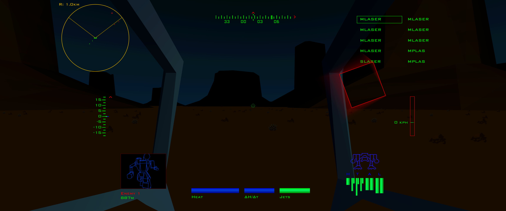
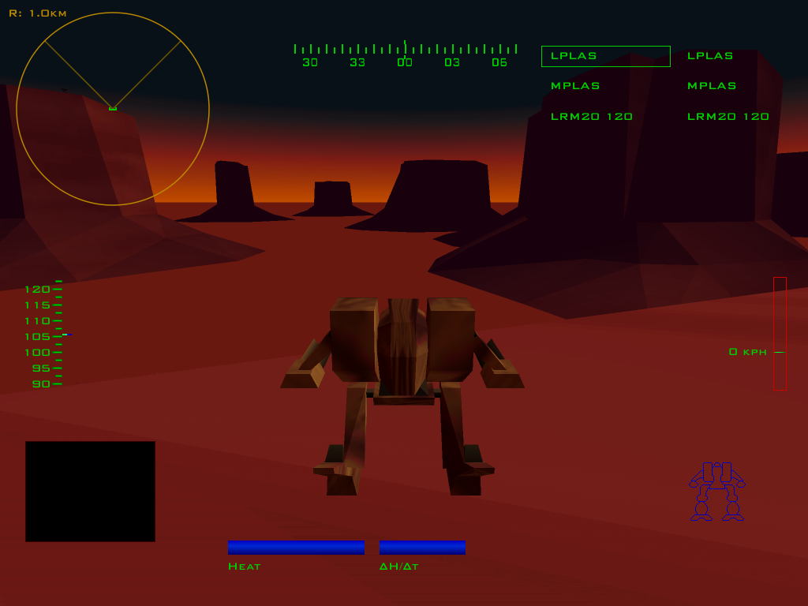
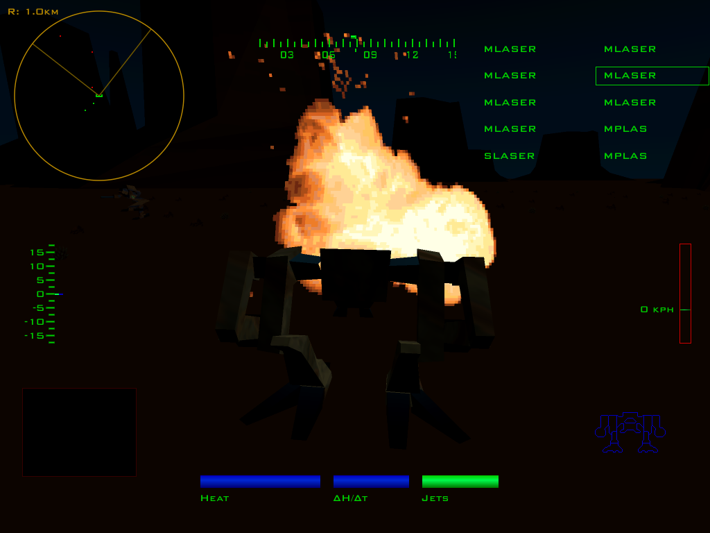
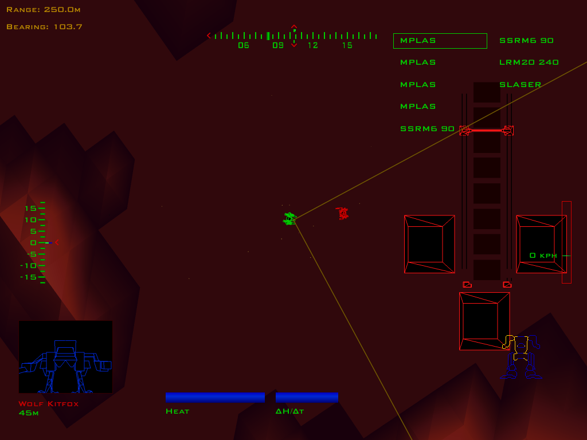

MECHWARRIOR 2: 31ST CENTURY COMBAT / DOS
MechWarrior 2
Enhanced Renderer Mod
This mod aims to preserve the DOS game’s art style—its original assets, dramatic gradients, and colors—but polish the presentation: widescreen and high-resolution rendering, the original HUD reproduced in crisp high resolution with the iconic MechWarrior font, and precise HOTAS axis input. The original game still runs the simulation, missions, AI, sound, and music, and you can dynamically switch between the original DOS renderer and the enhanced renderer.
Download for Windows ↓



Features
- High-resolution widescreen rendering with 4× supersampling, smoother cockpit motion, and reduced polygon wobble.
- The original HUD in crisp high resolution, using the iconic MechWarrior font, with adjustable panel placement and scaling.
- Smooth HUD animations and palette transitions: startup, shutdown, target acquisition, mission fade-ins, and day/night changes.
- Combined damage wireframe and armor/internal-structure meters, with fractional scaling and optional CRT smoothing and glow.
- Enhanced cameras, satellite view, and enhanced imaging, alongside weapon, damage, and HUD glitch effects.
- Precise HOTAS axis input: direct-position or relative-rate aiming, response curves, inversion, calibration, and live preview.
- Improved scene detail, including smoother camouflage, dropship panel textures, and motion-blurred rotors.
- Capped framerate to reduce self-damage from your own LRMs, plus corrected jump-jet fuel recharge at higher frame rates.
Download & setup
You’ll need: Windows x64 on Intel/AMD hardware, your own installed DOS copy of MechWarrior 2: 31st Century Combat, and its CD image. The game must be patched to v1.1; the configurator guides you through this.
No game files are included. Other editions, Linux/Wine, and Windows ARM64 are unsupported.
Download v0.10.1 · Windows x64 ZIP (prerelease)Corresponding source v0.10.1 (ZIP)
Start here: Download the ZIP and extract it into a fresh folder. Then follow the instructions that apply to you.
First-time installation
- Open the configurator.
Runconfigure.batin the new folder. - Set up your game and display.
Follow Game Installation for file placement, patching, verification, and required game settings. Adjust display settings in Renderer and HUD. Settings save automatically. - Optional: set up your HOTAS.
In Input, map axes and tune response curves, inversion, deadzones, and calibration with the live preview. Map buttons to keyboard controls using JoyToKey or Joystick Gremlin.
Migrating from an existing mod installation
- Copy your game and settings.
Copy these from your existing mod installation into the same locations in the new folder:game/mw2mods/mod.confmw2mods/joystick.conf, if present
- Your settings carry over.
You’re ready to play. To review new options, runconfigure.bat.
Launch the game.
In the new folder, run launchmw2_<FPS>fps.bat with the FPS value closest to your monitor’s refresh rate.
Switch renderers during a mission
| Keys | Action |
|---|---|
| Ctrl + / | Switch between the original DOS renderer and the enhanced renderer. |
| Ctrl + Shift + / | Show the original and enhanced renderers side by side. |
Hold the modifier keys and press / (forward slash).
See the release notes for current status and limitations. Feedback and reproducible bug reports are welcome.